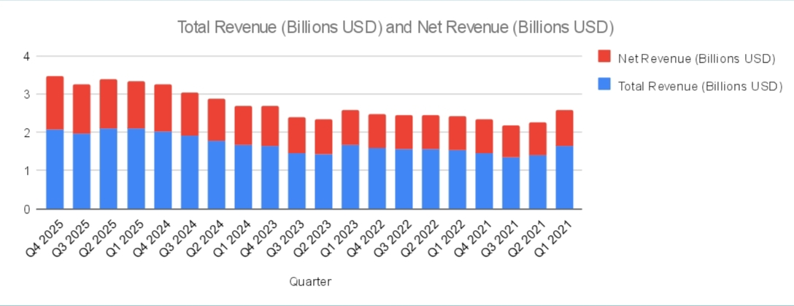
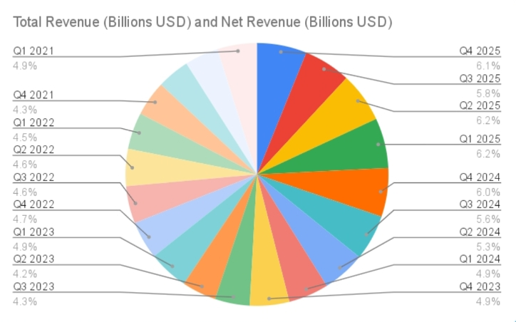

Nama: Mohammad Fardan Zaki Arian Saputra| Kelas XI
Penelitian ini menganalisis pendapatan Nasdaq selama 20 kuartal dari tahun 2021 hingga 2025 untuk melihat tren pertumbuhan perusahaan.
| No | Quarter | Revenue (B USD) |
|---|---|---|
| 1 | Q4 2025 | 2.080 |
| 2 | Q3 2025 | 1.958 |
| 3 | Q2 2025 | 2.090 |
| 4 | Q1 2025 | 2.090 |
| 5 | Q4 2024 | 2.032 |
| 6 | Q3 2024 | 1.902 |
| 7 | Q2 2024 | 1.792 |
| 8 | Q1 2024 | 1.674 |
| 9 | Q4 2023 | 1.500 |
| 10 | Q3 2023 | 1.451 |
| 11 | Q2 2023 | 1.433 |
| 12 | Q1 2023 | 1.674 |
| 13 | Q4 2022 | 1.582 |
| 14 | Q3 2022 | 1.557 |
| 15 | Q2 2022 | 1.552 |
| 16 | Q1 2022 | 1.533 |
| 17 | Q4 2021 | 1.466 |
| 18 | Q3 2021 | 1.357 |
| 19 | Q2 2021 | 1.412 |
| 20 | Q1 2021 | 1.651 |
Total Data: 34.981 B
Mean (Rata-rata): 1.749 B
Median: 1.442 B
Modus: 2.090 B
| Interval | Frekuensi |
|---|---|
| 1.30 – 1.49 | 4 |
| 1.50 – 1.69 | 6 |
| 1.70 – 1.89 | 2 |
| 1.90 – 2.09 | 6 |
| 2.10 – 2.29 | 2 |
penyajian data dalam bentuk diagram batang dan Diagaram lingkaran


Berdasarkan data, pendapatan Nasdaq menunjukkan tren meningkat dari tahun 2021 hingga 2025. Nilai tertinggi terjadi pada tahun 2025 sebesar 2.090 B USD. Hal ini menunjukkan pertumbuhan perusahaan yang stabil meskipun terdapat fluktuasi kecil.